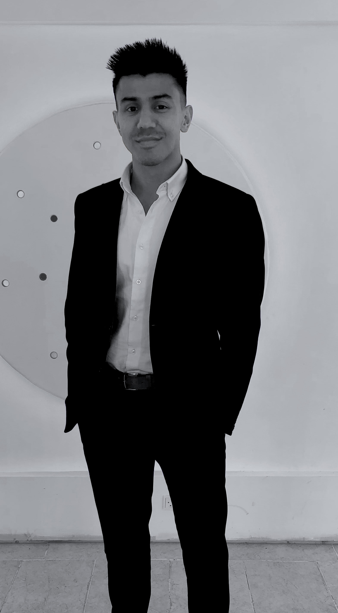

Om mig
Mit navn er Sajad Sabor. Jeg kommer oprindeligt fra Afghanistan og ankom til Danmark da jeg var 8 år. Jeg voksede op i Vodskov, som er en lille by i Nordjylland, hvor jeg også gik i skole. Vodskov skole havde ikke andre indvandre elever udover mig og mine brødre, hvilket resulterede i en hurtig integration.Efter at have færdiggjort folkeskole, tog jeg på gymnasium i Nørresundby. Samtidig med at jeg gik på gymnasium, havde jeg udviklet en gaming karrier, hvor jeg deltog i de forskellige LAN events med et hold i League of Legends. Det udviklede sig til at jeg blev tilbudt en kontrakt fra en tysk manager, men på baggrund af min families skepsis afslog jeg, og fortsatte på gymnasium.
Jeg dimitterede fra Nørresundby Gymnasium i 2015, hvor jeg valgte at tage et sabbatår. I mit sabbatår havde jeg et mål, netop at finde en metode til at frembringe passiv indkomst. Jeg havde besluttet mig for at jeg skulle studere efter mit sabbatår, men ville ikke arbejde stamdtidlig, derfor jeg bestræbede mig efter dette mål. Herunder afprøvede jeg e-commerce, lave apps og affiliate marketing. De fleste ting som jeg udførte endte med fiasko, bortset fra affiliate marketing. Jeg formåede at oprette en hjemmeside som kunne skabe indkomst vha. et samarbejdsplatform fra Amazon.
I 2016 startede jeg på Aalborg Universitet for at studere medicin. Efter kort tid i studiet realiserede jeg, at jeg ikke længere kunne vedligholde min hjemmeside, og blev nød til at stifte et samarbejde med min bror, og overlod ham det meste af mit projekt. Midt i 5. semester tog jeg beslutningen om at droppe ud af studiet. Jeg indså at det ikke var den retning jeg ville tage, og på daværende tidspunkt var der en lov vedrørende bachelorloft og mange andre ting som åndede mig i nakken. Efter jeg droppede ud, valgte jeg at arbejde som sælger. Ved siden af det oprettede jeg min første danske hjemmeside: VirkerDet.dk, som stadig på nuværende tidspunkt er under udvikling.
I 2020 begyndte jeg at studere multimediedesigner på KEA. Jeg valgte KEA fordi jeg ville opleve noget helt nyt i mit liv, nemlig det at flytte til København. Jeg valgte multimediedesigner fordi de kompetencer jeg kommer til at udvikle, vil kunne bidrage ti min nuværende hjemmeside, men også de fremtidlige projekter jeg har for mit liv.
